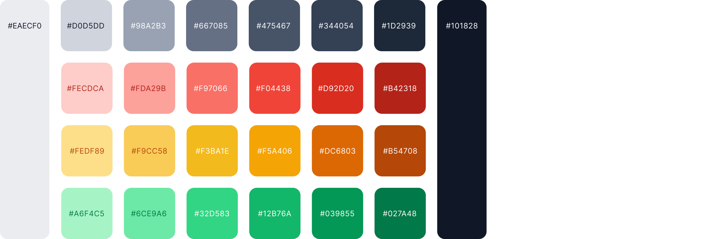
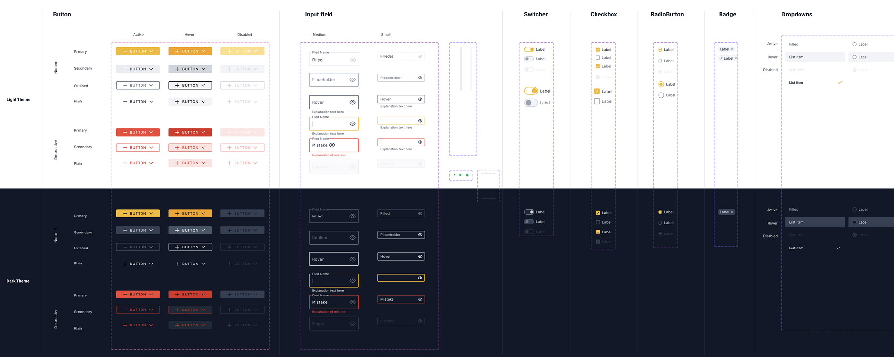
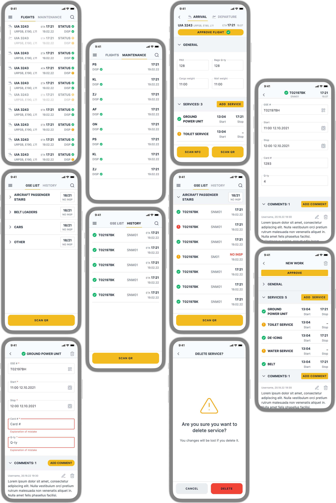
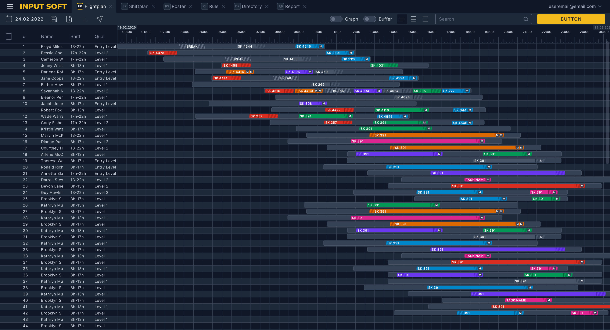
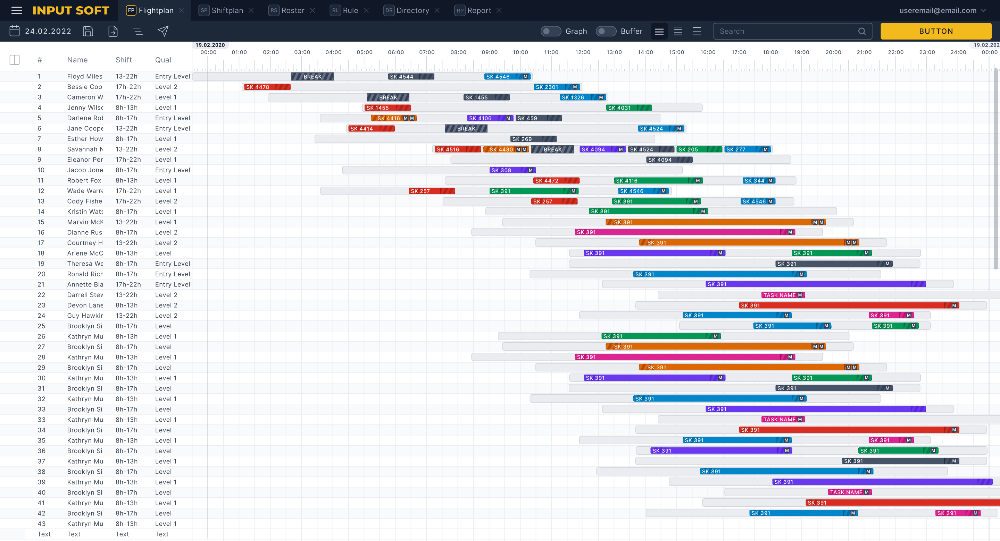
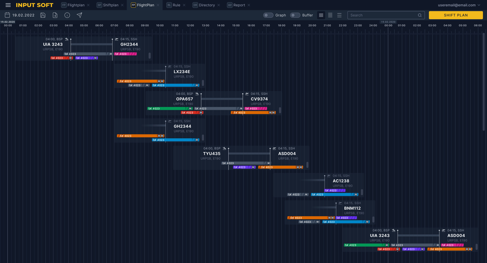
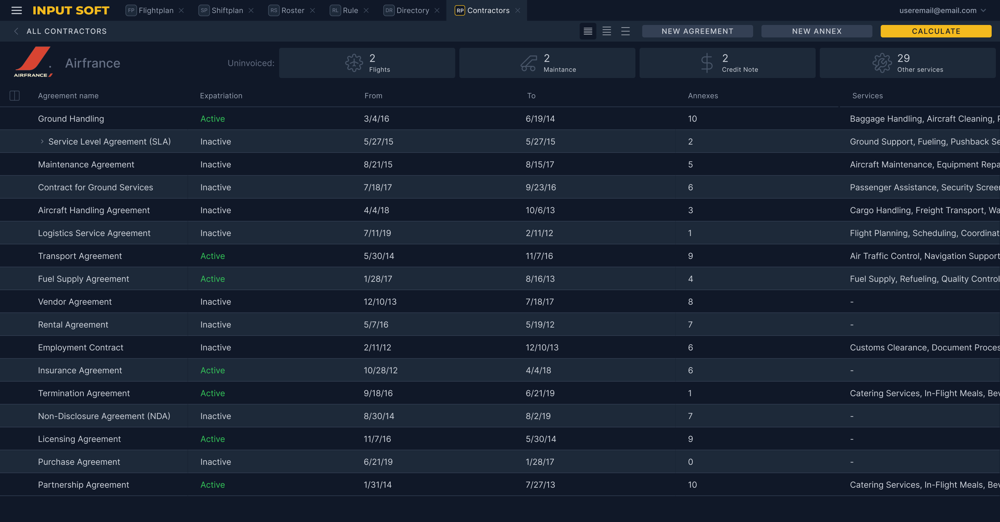

INPUT SOFT
Overview
INPUT SOFT is a platform designed for aviation companies to streamline airport operations, optimize resource management, reduce costs, and provide seamless, process-wide data insights.
The system supports both web and mobile environments, enabling real-time coordination between airport managers and ground staff.
My role included developing the UI/UX design and crafting the system’s information architecture to ensure clarity, scalability, and ease of use in high-pressure operational contexts.
Understanding the Problem
The primary challenge was identifying inefficiencies in existing airport service operations and understanding how fragmented tools affected speed, accuracy, and communication.
Activities
- Interviewed airport managers, ground staff, and operational teams.
- Analyzed workflows centered around manual task assignment and shift planning.
- Conducted market research to identify industry trends and systemic pain points.
- Collected user feedback from existing tools to uncover inefficiencies.
- Performed competitor analysis to benchmark features and identify gaps.
- Observed on-site operations to capture real-world constraints.
Key Insights
- Managers struggled to track resource utilization and operational costs.
- Heavy reliance on spreadsheets and paper caused frequent delays and errors.
- Lack of real-time updates led to miscommunication between teams.
- Ground staff experienced overloaded communication channels.
- Limited data integration slowed reporting and decision-making.
- Existing solutions were either too generic or overly complex for smaller teams.
The Process
The design process focused on establishing a clear technical and functional structure that could support scalability while remaining intuitive for daily operational use.
Stages: Research & Analysis → Ideation → Wireframes → UI/UX Design → Testing → Development
User Roles
Operations Manager
Oversees daily airport operations, assigns tasks, and ensures smooth coordination across departments.
Key Needs- High-level dashboards with operational overviews.
- Detailed task tracking to identify bottlenecks.
- Delayed access to real-time data.
- Fragmented systems for scheduling, communication, and reporting.
Ground Staff
Executes aircraft servicing, cargo handling, fueling, and other ground operations in fast-paced environments.
Key Needs- Instant task notifications and updates.
- Simple feedback mechanisms for task completion.
- Overloaded communication channels.
- Unclear task prioritization under pressure.
Design Solution
Collaborative ideation workshops with airport managers, ground staff, and finance teams ensured that the system addressed operational realities.
The design system uses the Inter font family and a restrained color palette, emphasizing readability and clarity in data-dense interfaces.
A flexible component library supports multiple screen sizes and allows rapid iteration while maintaining visual and functional consistency.


Mobile App
The mobile app enables real-time operational control for ground teams.
- Live flight schedule updates, including delays.
- Instant task reassignment via app or WhatsApp.
- Real-time confirmation of task completion.
- Reduced communication friction during peak operations.

Web App
The web platform serves as the operational core for planning, analytics, and decision-making.
- Automated shift, flight, and resource planning.
- AI-based forecasting for optimized resource utilization.
- Automated cost calculation and invoicing.
- Advanced reporting on FTE, worked hours, and utilization.
- Seamless report sharing via email, WhatsApp, or integrations.





